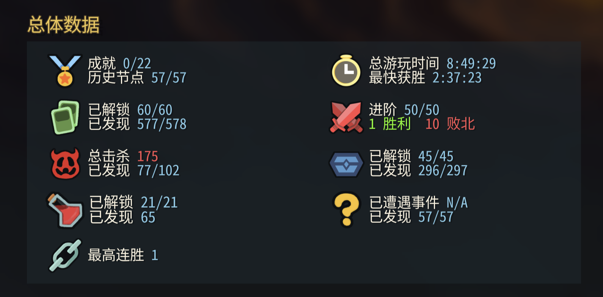

百科全书、57 个历史节点、每日挑战与自定义模式、全角色进阶 10。只改你自己的存档文件，不改游戏、不装 mod，改之前自动备份。 The full compendium, all 57 timeline epochs, Daily and Custom modes, and ascension 10 for every character. It only edits your own save file, never the game, and backs everything up first.

运行后的游戏内「总体数据」：历史节点 57/57，进阶 50/50，卡牌 577/578，遗物 296/297The in-game stats screen after running it: epochs 57/57, ascension 50/50, cards 577/578, relics 296/297
所有 ID 都直接从游戏程序 sts2.dll 读取，不会写入不存在的内容。Every ID is read straight from the game's sts2.dll, so nothing invalid is written.
不会改：Steam 成就、胜负场数、历史对局、怪物图鉴。游戏里显示 577/578、296/297 是正常的：差的那 1 个是游戏代码里的“已废弃”占位内容，正常也拿不到。 Never touched: Steam achievements, win/loss stats, run history, the bestiary. Seeing 577/578 and 296/297 in-game is expected: the missing one is a deprecated placeholder that can't be obtained.
大约 2 分钟。需要 Python 3.8+。About 2 minutes. Requires Python 3.8+.
点上面的「下载 ZIP」。解压后保持 sts2_unlock_all.py 和 sts2_ids.json 在同一个文件夹里。游戏要至少进过一次，生成存档。Use "Download ZIP" above. Keep sts2_unlock_all.py and sts2_ids.json in the same folder. Launch the game at least once so a save exists.
最重要的一步。Mac：菜单栏 Steam → 退出 Steam（⌘Q）；Windows：托盘图标右键 → 退出。只关窗口不算。脚本检测到 Steam 在运行会拒绝执行。The most important step. macOS: Steam menu → Quit Steam (⌘Q). Windows: right-click the tray icon → Exit. Closing the window isn't enough, and the script refuses to run while Steam is open.
它会列出找到的存档（开 mod / 原版分开），输入编号或直接回车全选。会先自动备份到 backups/。It lists the saves it found (modded and vanilla are separate). Type a number, or press Enter for all. It backs up to backups/ first.
让 Steam 把新存档上传到云端。如果弹出「云存档冲突」，选本地 / 此计算机上的文件。This lets Steam upload the new save. If it shows a cloud conflict, choose the local files.
没有魔法，就是改 JSON，再处理好 Steam 云同步。No magic: it edits JSON and handles Steam Cloud correctly.
progress.save 是普通文本。百科全书看 discovered_* 列表，模式和角色看 epochs[].state 是不是 revealed。progress.save is plain text. The compendium reads discovered_*; modes and characters depend on epochs[].state being revealed.
游戏启动时会拿云端覆盖本地。脚本在 Steam 关闭时，同时改 Steam 的云缓存 userdata/…/2868840/remote 和本地存档，重开后 Steam 会上传新版本。At launch the game copies the cloud save over local. With Steam closed, the script edits both Steam's cache in userdata/…/2868840/remote and the local save, so Steam uploads the new version.
每次运行都会自动备份，一条命令还原：Every run is backed up, and one command restores it:--restore backups/<时间>--restore backups/<timestamp>
目前没有因为改存档被封号的已知案例，官方也表示不打算做侵入式反作弊。脚本只改你自己的单机进度，不碰成就和排行榜。但官方没有明确写过相关规定，风险自负。There are no known bans for editing saves, and Mega Crit has said they don't plan invasive anti-cheat. The script only touches your own single-player progress, never achievements or leaderboards. There's no explicit official policy though, so use at your own risk.
基本都是改的时候 Steam 没退干净，游戏启动时用云端旧存档覆盖了本地。完全退出 Steam 后再跑一次就好。Almost always Steam was still running, so the game pulled the old cloud save at launch. Fully quit Steam and run it again.
旧 ID 列表照样能用，只是新内容不会解锁。可以从游戏的 sts2.dll 重新提取：The old ID list still works; new content just won't be unlocked. Re-extract from the game's sts2.dll:
pip install dnfile → python3 sts2_unlock_all.py --dll path/to/sts2.dll
用 --save-root 和 --steam-root 手动指定路径。默认存档位置：Point at them with --save-root and --steam-root. Default save locations:
~/Library/Application Support/SlayTheSpire2%APPDATA%\SlayTheSpire2~/.local/share/SlayTheSpire2